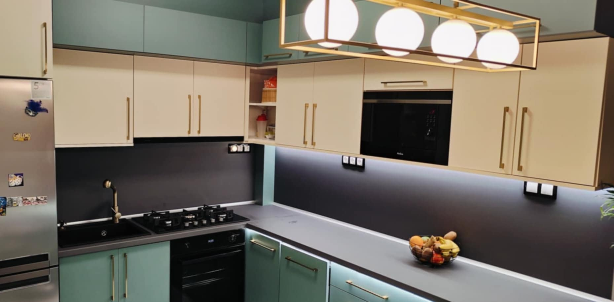
01
Komplett konyha
Teljes körű konyhai megoldások a méréstől a beépítésig, gépesítéssel együtt.
Modern, az igényeire szabott, minőségi bútorok — elérhető áron, helyszíni színkatalógus segítségével. A tervezéstől a beépítésig egy kézben.
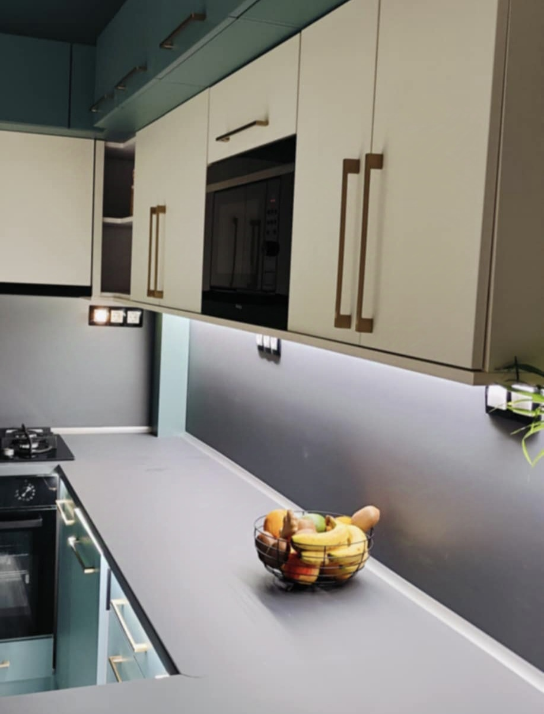
Az elmúlt évek alatt ügyfeleim igényeit az elvárásaik szerint valósítottam meg. Igényes munka elérhető áron — a megbeszélt időpontot betartva.

Teljes körű konyhai megoldások a méréstől a beépítésig, gépesítéssel együtt.
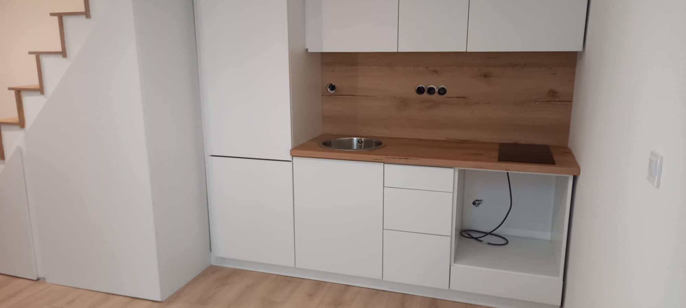
Modern bútorok, kizárólag az Ön igényei és tere alapján megtervezve.
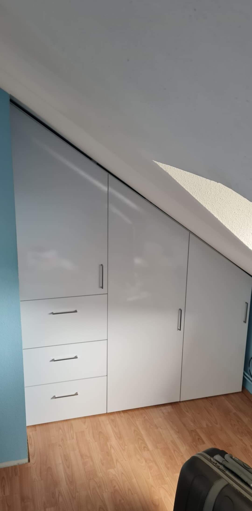
Tökéletes tárolás a legszűkösebb, ferde tetőtéri sarokba is.
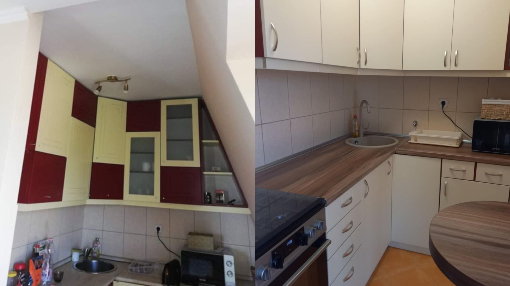
Régi, megkopott bútorok újjávarázsolása — ami értékes, az maradjon.
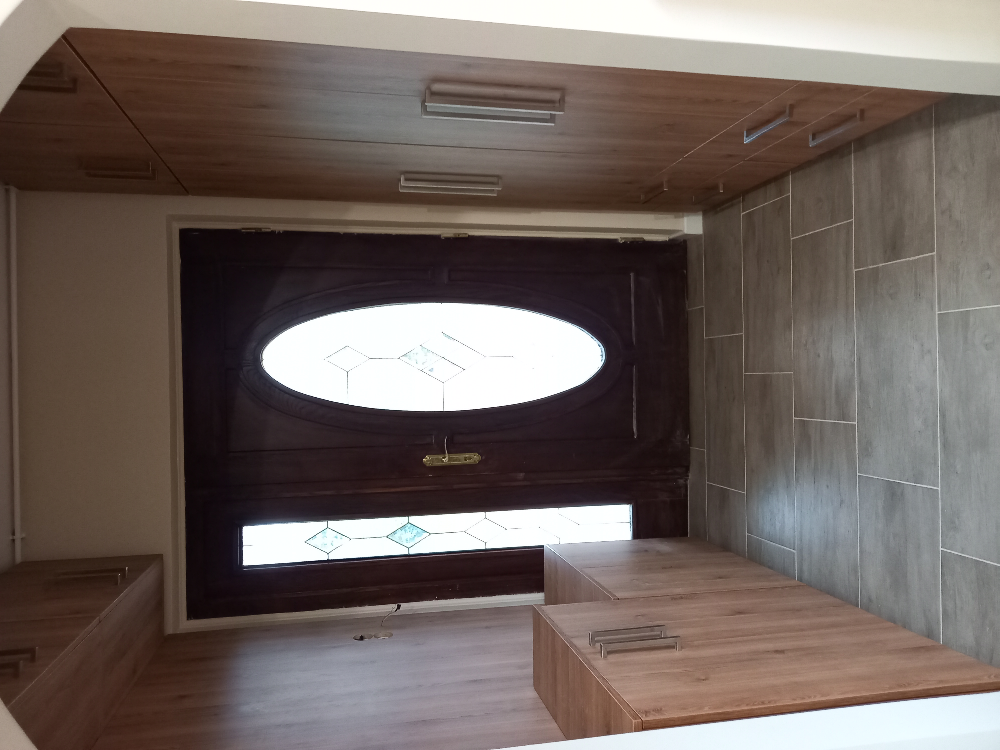
Pontos ajtó- és vasalatbeállítás a tökéletes, halk működésért.
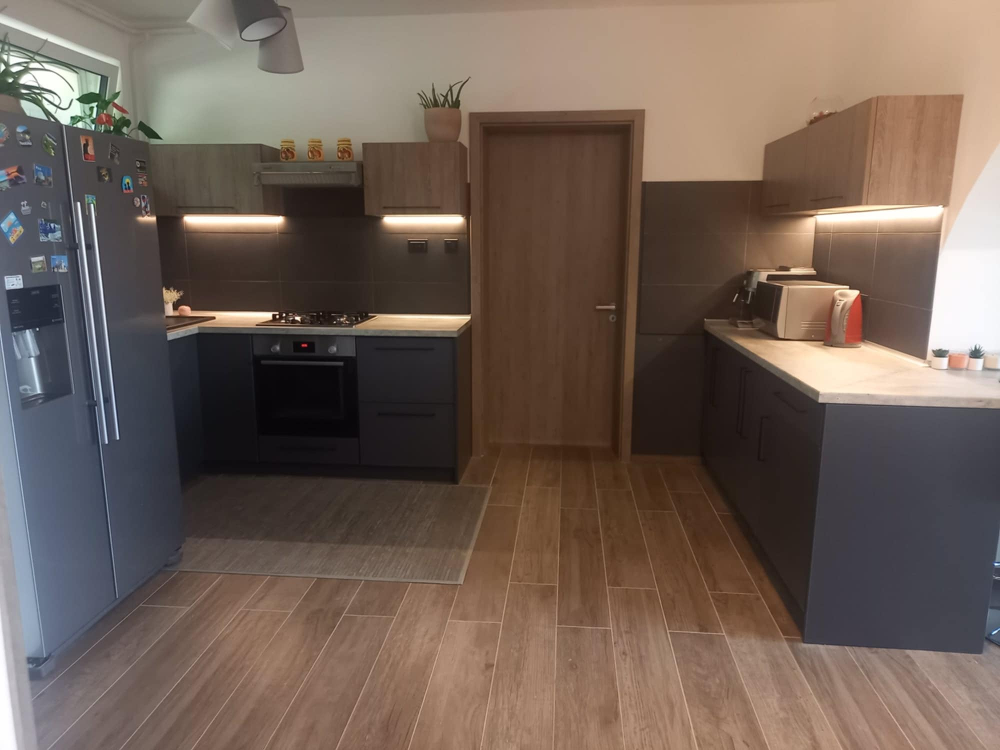
Komplex, összehangolt otthoni berendezés egyetlen kézből.
Kattintson bármelyik képre a nagyításhoz — a nyilakkal lapozhat.
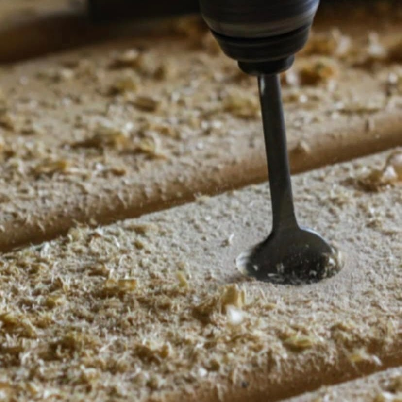
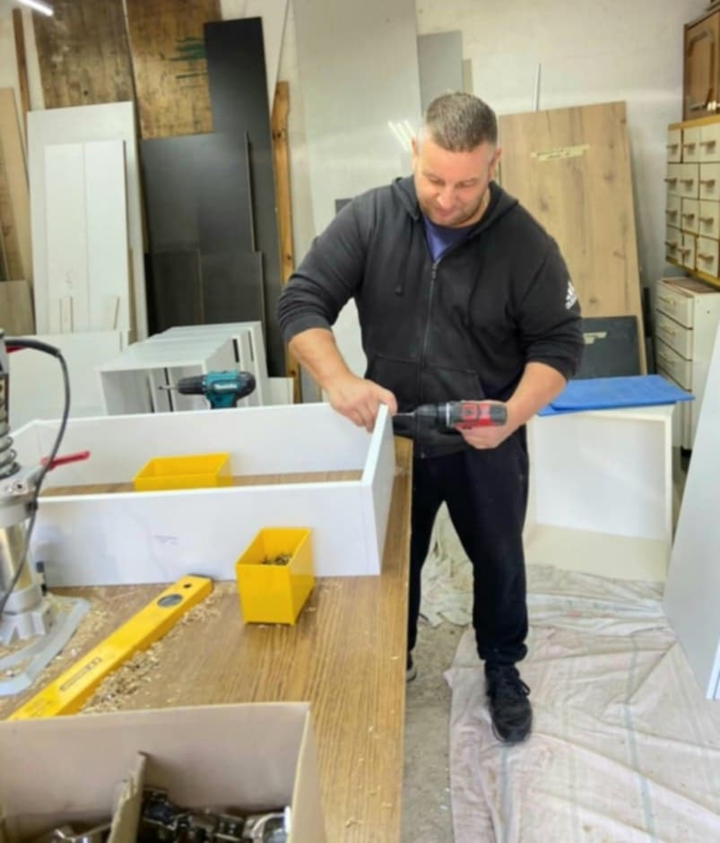
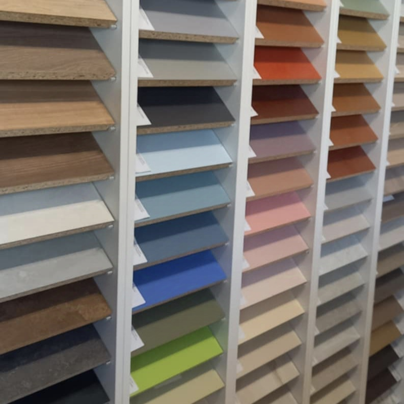
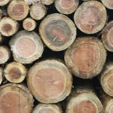
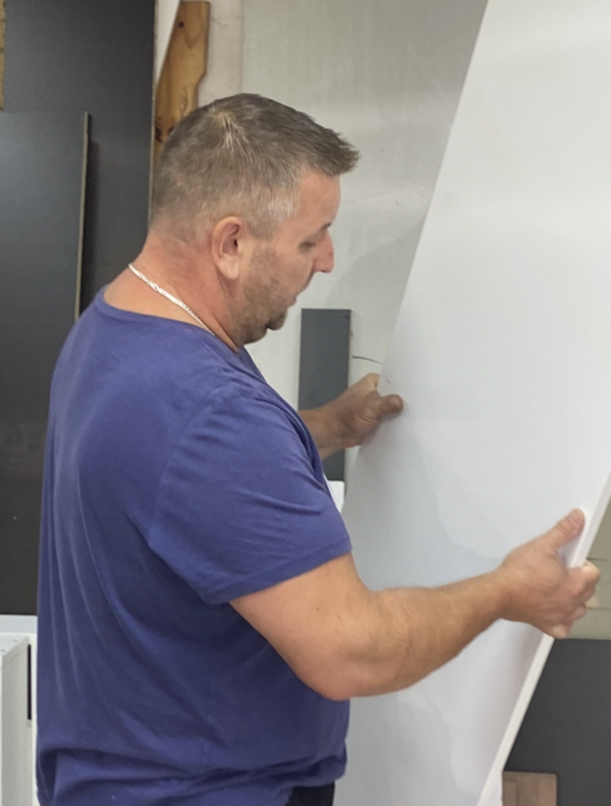
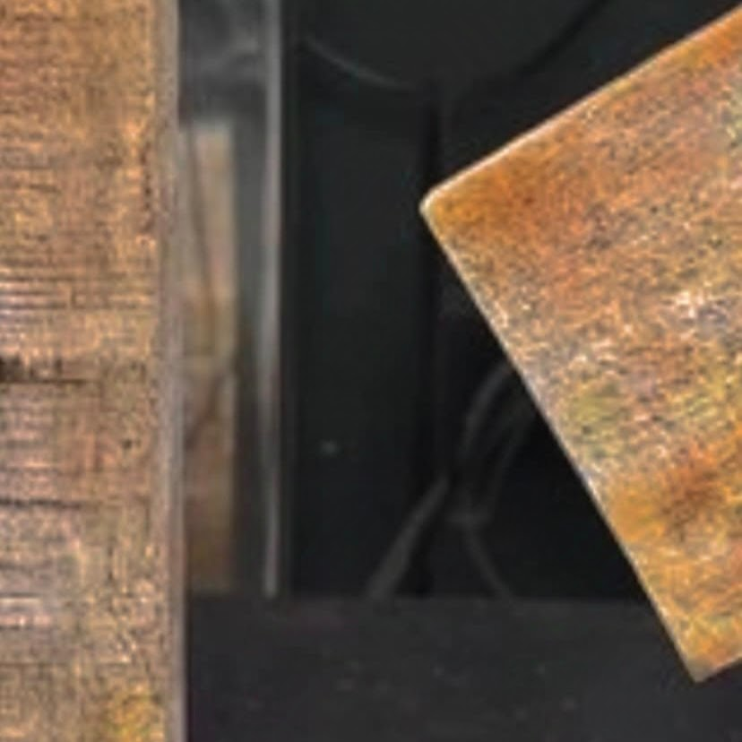
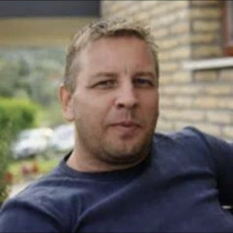
30 éves szakmai tapasztalattal rendelkezem. A korral lépést tartva, technikailag és esztétikailag is folyamatosan megújulva dolgozom — mert szeretem és élvezem a munkámat. Boldogsággal tölt el a megrendelő elégedettsége, ezért a tökéletes eredmény érdekében maximális minőségre és pontosságra törekszem.
Nem kell semmit előre eldöntenie. Egyeztetünk egy időpontot, én pedig mindent a helyszínen átbeszélek Önnel.
30 km-es körzetben ingyenes helyszíni felmérést biztosítok. Tapasztalt szakértelemmel, precízen mérem fel az igényeit.
Az első, ingyenes felmérésre elhozom a teljes színkatalógusomat is, hogy minden részlet a helyszínen, együtt dőljön el.